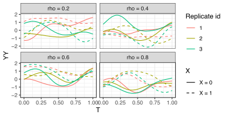

Trajectory-Oriented Optimization of Stochastic Epidemiological Models
2023 Winter Simulation Conference (WSC), pp. 1244-1255, 2023

Abstract
This paper develops trajectory-oriented optimization methods for stochastic epidemic models, focusing on matching full temporal dynamics rather than single summary targets.
The approach frames calibration as a trajectory-matching problem and uses optimization strategies tailored to noisy, computationally expensive simulation outputs.
By prioritizing agreement with time-varying epidemic patterns, the method improves calibration fidelity and supports more realistic scenario analysis for decision support.
Citation
BibTeX
@inproceedings{fadikar2023too,
title={Trajectory-Oriented Optimization of Stochastic Epidemiological Models},
author={Fadikar, Arindam and Collier, Nicholson and Stevens, Abby and Ozik, Jonathan and Binois, Mickael and Toh, Kok Ben},
booktitle={2023 Winter Simulation Conference (WSC)},
pages={1244--1255},
year={2023},
organization={IEEE},
doi={10.1109/WSC60868.2023.10408258}
}